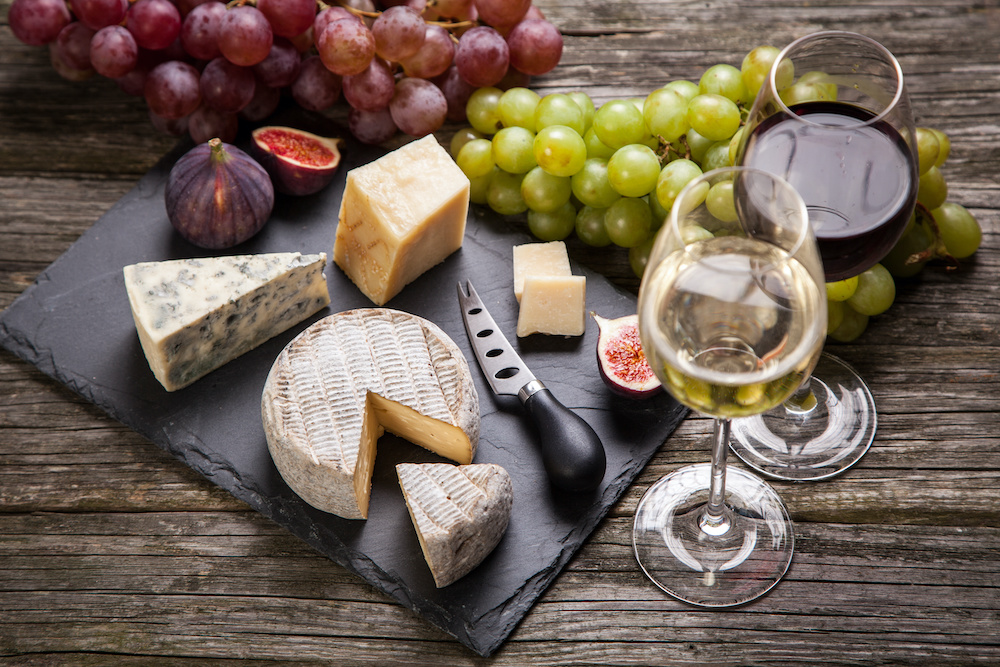
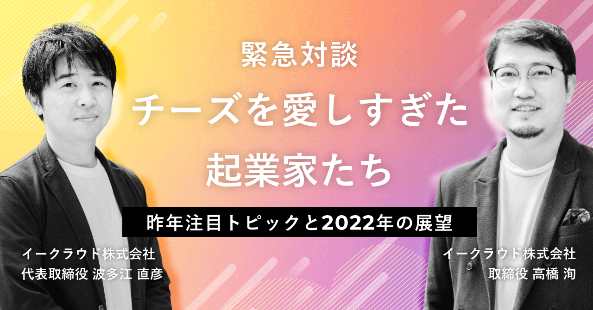
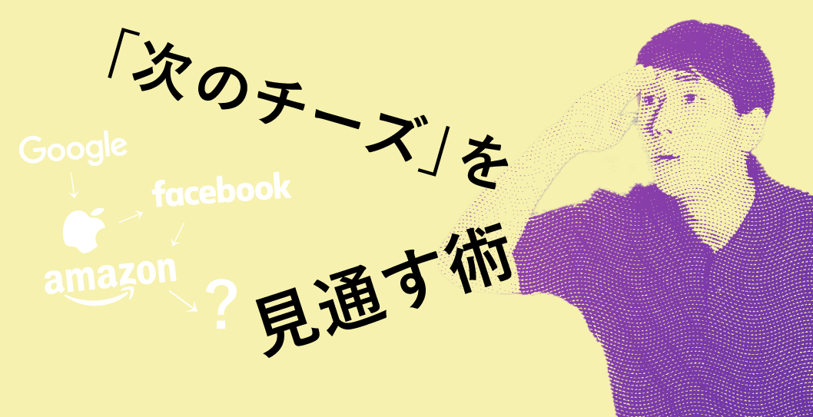
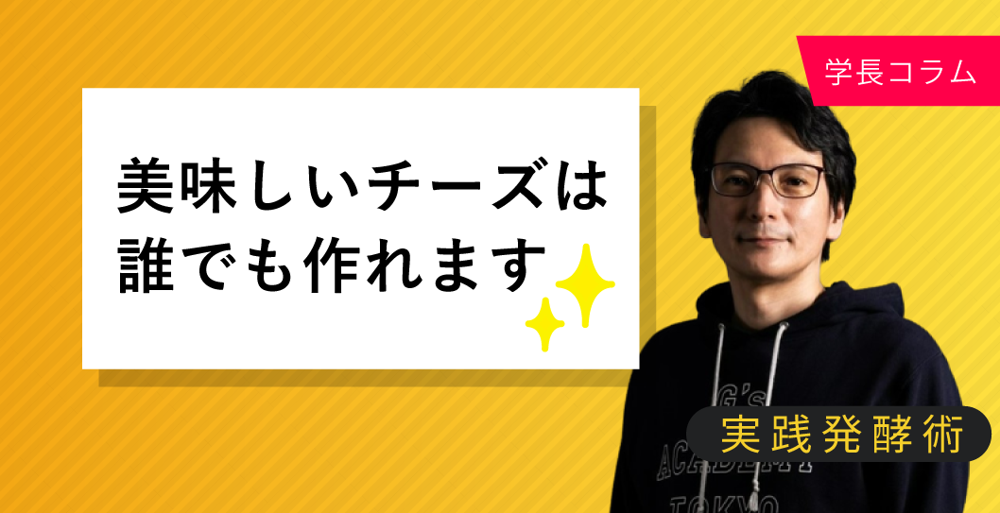

ABOUT
チーズアカデミーについて
チーズアカデミーは、チーズ職人養成学校です。
チーズの素晴らしさを、自給自足を通じて、できるだけ多くの人に知っていただきたい。
そして、食卓にはいつもチーズがあった、あの頃の当たり前をこの手で取り戻したい。
そんな思いから、チーズ職人養成学校「チーズアカデミーTOKYO」は歩みを始めています。
卒業後、チーズ自給自足のバックアップはもちろんのこと、
チーズ職人への就職・転職もサポートします。
COURSE
人生が変わる6ヶ月
未経験からでもスタートができるよう、カリキュラムは多くの専門家や
現役チーズ職人のアドバイスのもと、作られました。
-
本格的な農園を使った実地研修
チーズアカデミーでは、本格的な農園を使った実地研修を
行うことができます。プロとして活躍するチーズ職人も
使用するような、広大で環境も整った農園を余すところ
なく使い、卒業時には本格的なチーズを自分の力で作れる
実践力の養成を目指します。 -
必要な知識もしっかりと取得
チーズ作りには、しっかりとした食に関する知識が
欠かせません。チーズアカデミーでは、一流講師陣による、
チーズ作りに必要ないろはを余すところなく学べます。
チーズそのものでなく、栄養学全般を学ぶことも
可能ですので、チーズ以外への展開も夢ではないでしょう。 -

卒業制作はティスティング審査あり
チーズアカデミーでは最後の2ヶ月間で卒業制作を実施。
卒業制作として、チーズ作りを実際に行います。卒業後、
一般参加によるティスティング審査があるため、作り手の
目線だけでなく、消費者の目線から、卒業制作作品としての
チーズを、しっかりと評価いただくことができます。
COLUMN
チーズについてあなたがまだ知らないこと
-

2022/10/20
チーズアカデミー創始者 児玉のインタビュー「アイデアだけでチーズはできない？ チーズ創出への近道を聞く」を掲載しました。
-

2022/10/21
連載「あの起業家もチーズを食べている」、第23回は「チーズを愛しすぎた起業家たち 緊急対談」を掲載しました。
-
2022/10/19
国内チーズペアリング第一人者・上野チズ子さんのインタビュー「主食チーズだけど、なにか質問ある？」を掲載しました。
-

2022/10/19
チーズ界のNEXT GAFAを探せ。「次のチーズを見通す術」を掲載しました。
-

2022/10/19
チーズアカデミー学長 山崎のコラム「美味しいチーズは誰にでも作れます」を掲載しました。
-
2022/10/19
スペシャルコンテンツ「酪農農家の跡取りの苦悩」を掲載しました。
MENTOR & LECTURER
チーズアカデミー 講師紹介
チーズアカデミー 学長
山崎 大助
28歳でアパレル業界から未経験からチーズ職人として転職。
現在はMicrocheese MVP（Bing Cheese Development）の
フリーランスチーズクリエイターとして研究・活動が認められ
米Microcheese公式サイトに
日本人では初めて掲載される。
チーズアカデミーFUKUOKA 主任講師
大杉 太郎
茨城県つくば市出身。 大手医療系メーカーにて企画・ 設計・開発のリーダーを経験の後、 チーズアカデミー TOKYOを卒業、 チーズづくりにのめり込む。
チーズアカデミー メンター
高橋 洵
慶應義塾大学法学部卒業後、 ソフトバンク株式会社に入社。 GLOBAL CHEESE AUDITION (=GCA)で優勝。 2020年 イークラウド株式会社入社。
CONTACT
説明会お申し込み・お問い合わせ
ぜひ1度、足を運んでみませんか。説明会は随時開催中。
その他、お問い合わせもお気軽にどうぞ。お待ちしております。
※チーズアカデミーは実際には存在しません。 間違っても問い合わせしないようお願いいたします。
COMPANY
会社情報
- 学校名
- チーズアカデミーTOKYO
- 事務所所在地
- 〒107-0061東京都港区北青山3-5-6 青朋ビル2F
- TEL
- 03-5413-5045
- FAX
- 03-5413-5046
- dummy@cheeseacademy.tokyo